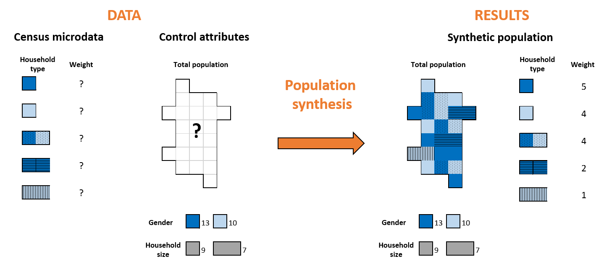
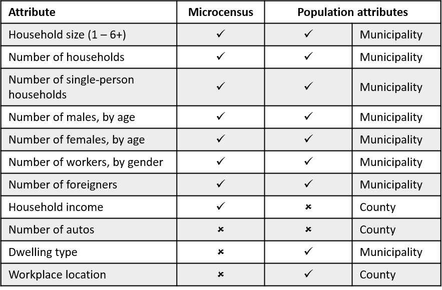

A synthetic population generator for the Metropolitan Area of Munich is currently under development. Using census microdata, municipality-level and county-(called Kreis)-level data, a process called Iterative Proportional Updating is used to generate a synthetic population. A detailed description of the approach is currently under development.
Synthetic populations are used in transportation modeling when individual records are not available due to privacy data, lack of resolution or some attributes. Travel behavior of synthesized individuals is simulated to evaluate, for example, the effect of building a new shopping mall on the transport network.
The objective of population synthesis is to generate a population that matches certain attributes of the total population based on a sample of households. Control attributes can be at the household level, such as household size or number of autos, or at the person level, such as gender, age or employment status. The optimization procedure consists on obtaining how representative is each one of the households of the sample to the total population, given a set of control attributes that act as constraints.
Population synthesis has three phases:
In Germany, statistical information of the population is available online at the GENESIS-Online database . Data are aggregated at the municipality level (Gemeinden), county level (Landkreise), state level (Länder) or Nationwide (Bund). They include information on population, educacion, housing and environment, economic sectors, public finances or economic accounts.
For household structures, we can rely on microdata from Household Travel Surveys or Household Census. In Germany, Household Census contains more detail than Household Travel Surveys on how households are structured. The number of records is a 5% sample of the total population, and due to privacy, they can only be linked to the state on which the household is located. Household Census microdata can be purchased from the State Statistical Office. They include household size, household composition or age, gender and employment status of household members.
After data are collected, we decide which attributes are going to be matched, or control attributes. Control attributes can be household type or person type. Usual household type attributes are household size, number of autos the household owns, number of workers in the household or household income. Person type attributes refer to the individuals on the household and usually include age, gender, ethnicity or working status.
Control attributes must be included on both databases and have transferable categories, which can limit the number of attributes to match. In some cases, total population attributes are not aggregated at the same resolution. Based on the available data, we use 24 control attributes at the municipality level and 5 control attributes at the county level.
For the optimization procedure, we need to generate the frequency matrix. The frequency matrix shows the household type and the frequency of different person types within each household for the sample. The dimension of the matrix is N x M, where N is the number of households in the microdata and M is the number of control attributes (household and person type). A 0 or 1 is assigned to household types control attributes and the persons in the household that has that attribute are assigned to person types control attributes.
The synthetic population is generated using Iterative Proportional Updating (IPU). This procedure was developed by Ye et al. (2009) and it was expanded to accomodate controls at multiple geographic resolutions by Konduri et al. (2016).
The IPU procedure calculates a set of weights of each one of the microdata records in an iterative approach. It is capable of closely matching household-level and person-level marginal distributions at the same time; and it can accommodate control attributes defined at municipality-level or county-level simultaneously. This feature is specially important for our case study, as households by size are only available at the county-level.
The IPU procedure is shown in Figure 1. It consists on adjusting the set of weights for each household of the microdata to minimize the error between the control distribution and calculated distributions of each attribute, at each municipality. Therefore, the set of weights will vary within municipalities. The process converges after a variable number of iterations, usually under 500.

Initial set of weights is equal to 1. On the next iterations, weights are updated as:

Where: wi,j,m is the updated weight of household i at municipality m, wi,j-1,m is the previous weigth of household i at municipality m, ck,m is the contraint of the control attribute k at municipality m, fi,k,m is the frequency of the control attribute k on household i at municipality m. Weights are only updated on the households where the frequency of the control attribute is different than zero.
Weights are updated after considering each control attribute. All attributes, regardless they are household or person level, are treated equally. After all control attributes are considered, we calculate the relative difference in absolute value between the constraint and the calculated distributions, for each attribute.

Where: ek,m is the error of control attribute k at municipality m, wi,j,m is the updated weight of household i at municipality m, fi,k,m is the frequency of the control attribute k on household i at municipality m, ck,m is the contraint of the control attribute k at municipality m.
Municipality level attributes update only the set of weights of the corresponding municipality, while county level attributes update the set of weights of all municipalities that are inside the county.
The goodness of fit of the set of errors is calculated as the average error (deviation measure value). This value is compared to the previous iteration. If the absolute difference of average deviation values between two full iterations satisfies a set of tolerance criteria, the IPU procedure stops updating sample household weights. The default threshold is set equal to 0.01% and can be modified by the user. Additional stopping criteria include the maximum number of iterations (default value equal to 1,500) and average error threshold (default value of 0.0000001).
Some modifications has been implemented on the IPU procedure to reduce computational time and memory consumption. Given that the number of zero-value cells of the frequency matrix can be quite large, a collapsed version of the frequency matrix is used for each attribute. This modification minimizes the number of replications to calculate weighted sums and to update the set of weights. Collapsed vectors (or sparse list representations) were previously applied by Pritchard and Miller in 2012; reducing memory requirements to 0.07% for the multizone approach on IPF procedure (iterative proportional fitting).
To generate the synthetic population, households of the microdata are randomly drawn from the sample based on their weights at each specific municipality. Once a household is selected for the municipality, it is allocated at one raster cell within the municipality. The probability for each raster cell is the ratio between the population and employment on the raster cell and the total population and employment on the municipality.
Attributes of each household can be controlled during the optimization procedure or uncontrolled due to lack of data.
Two examples of uncontrolled attribute are household income, which was available at the microdata but not on the aggregated data; and number of autos, which was only available on the aggregated data.
Control attributes are directly copied from the microdata into the synthetic population, as well as uncontrolled attributes that are available on the microdata. Other uncontrolled attributes are assigned to each household using Monte Carlo simulations.
Monte Carlo simulations is a technique that randomly draws one category of the variable based on the relative probability of the categories. Probability distributions can be copied from the aggregated values distributions or can be modeled based on microdata. For example, the number of autos is modelled using the Household Travel Survey in Germany (Mobilität in Deutschland). The model for the number of autos includes household size, number of workers, household income and household location.
Control and uncontrolled attributes of the synthetic population are summarized on the table.
Finally, the goodness of fit of the synthetic population is evaluated. Each population synthesis will produce different results, given the randomness on households' selection. Goodness of fit is evaluated for each municipality as the average error of the controlled attributes.
Where: GOFm is the goodness of fit at municipality m, K is the number of controlled attributes, ci,k,m is the value of the control attribute k of household i at municipality m, ck,m is the contraint of the control attribute k at municipality m.

A synthetic population represents line by line every household individually.
We have a census with microdata from 5 households, composed of one or two persons, who can be male or female. The total population has 13 females and 10 males, and 9 single-person households and 7 two-person households.
Population synthesis calculates how many of each household from the microdata is required to match the gender and household size distribution of the total population. In this case, 5 of household type 1; 4 of household type 2; etc.
In the example, household 123456 is a single-person household inhabited by one female older than 64 years, unemployed.
Household 123457 is a two-person household inhabited by one male worker between 29 and 39 years and one female worker between 29 and 39 years.
Ye, X.; Konduri, K.; Pendyala, R.; Sana, B.; Waddell, P. (2009). A Methodology to Match Distributions of Both Household and Person Attributes in the Generation of Synthetic Populations . 88th Annual Meeting of the Transportation Research Board, Washington, D.C.
Konduri, K.; You, D.; Garikapati, V.; Pendyala, R. (2016). Application of an Enhanced Population Synthesis Model that Accommodates Controls at Multiple Geographic Resolutions. 95th Annual Meeting of the Transportation Research Board, Washington, D.C. (Accepted for publication in Transportation Research Record, DOI: 10.3141/2563-08).
Pritchard, D.R.; Miller, E.J. (2012). Advances in population: fitting many attributes per agent and fitting to household and person margins simultaneously. Transportation 39, 685-704. DOI: 10.1007/s11116-011-9367-4.

The frequency matrix is substituted by three matrices.
The length matrix represents the number of cells different than zero for each attribute. The location matrix indicates the household ID that on which the value is different than zero. Finally, the value matrix indicates the value of the cell.
This approach saves computational time and memory for large frequency matrices with majority of zero-value cells.
For transportation modeling and land use analyses, spatial resolution must be higher than municipalities. Municipalities are usually divided in raster cells, where population and land use distributions are homogeneous.
We developed a gradual zoning algorithm to rasterize the Munich metropolitan area according to population and employment data. Employment was calculated based on land use.
Maximum resolution of raster cells is 100x100 m. Raster cells with lower resolution indicate that population and employment are more homogeneous at that area.
Boundaries of the raster cells respect the boundaries between municipalities.